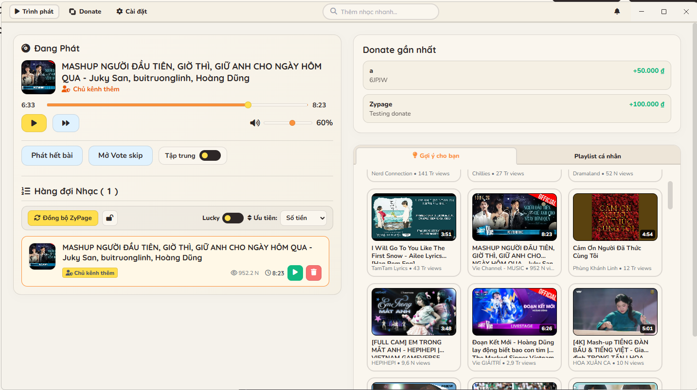

Xin chào xin chào
1. Thay đổi về tên, số hiệu phiên bản
Hiện tại vì một vài lí do sức khoẻ, em cũng không còn làm một mình app này nữa, lần này may là có sự giúp sức của người bạn của em. Vì vậy app vẫn đang tiếp tục phát triển. Và từ phiên bản này, app sẽ có tên gọi mới là Pineapple Studio để không còn introvert ở trong app nữa.
Ngoài ra, giờ số hiệu phiên bản sẽ là v26.7.0, tức là phiên bản tháng 7 năm 2026. App sẽ được kiểm thử, hoàn thiện tính năng và đẩy lên update ở cuối tháng 7 này. Và từ phiên bản này trở đi, mỗi tháng sẽ có 1 bản update mới, chứ không còn 1-2 tuần 1 phiên bản như trước. Các bản hotfix vẫn có thể ra mắt để fix các lỗi nghiêm trọng,
2. Thiết kế giao diện mới

Màu được làm với hệ màu mới, giảm độ bắt mắt, nổi khối ở giao diện cũ. Làm cho việc khi stream đỡ phải nhức mắt khi live vào ban đêm.
2. Thanh thêm nhanh Titlebar thông minh
Để tối ưu hóa không gian, ô nhập link và tìm kiếm nhạc đã được đưa lên trung tâm của Titlebar ứng dụng. Khi nhấp vào, một popover thông minh sẽ xuất hiện để streamer chỉnh sửa tên người gửi, số tiền donate hoặc đánh dấu là chủ kênh thêm nhạc.

Giờ đây, khi tìm kiếm, kết quả tìm kiếm trở nên to hơn. GIúp việc nhìn dễ dàng trong môi trường streamer mà không cần phải dí sát vào màn hình để thấy kết quả như trước. Ngoài ra với công nghệ mới, tốc độ search đã được tăng x2 lần.
Và khi tìm kiếm YouTube, khi ra kết quả đầu tiên hợp lí, chỉ cần nhấn Enter để thêm ngay bài đầu tiên vào hàng đợi.
Video Demo:
3. (Đang phát triển) Thêm nhạc trực tiếp từ trình duyệt
4. Ghim bài hát
Nếu muốn ưu tiên 1 bài hát thấp tiền hơn để được phát ở lượt tiếp theo, có thể nhấn Ghim bài hát để có thể ưu tiên bài hát dành cho viewer bất kì tiếp theo. Việc ghim bài hát không bị ảnh hưởng từ các donate mới cao tiền hơn. Như ví dụ dưới đây:
5. Vote Skip
Chức năng cho phép người xem Donate để bỏ qua bài hát đang phát, giúp tăng tương tác cũng như là ... cho streamer.
Với tính năng này giờ đây các chức năng như Bỏ qua, Xoá, Tua đi, tua lại bài hát chỉ được sử dụng tối đa 8 lần/12 giờ.
Video Demo:
6. Gia hạn thời gian
8. Phím tắt điều khiển nhanh chóng
Điều khiển trình phát tiện lợi bằng bàn phím tương tự như xem phim trên YouTube:
Sử dụng phím Space hoặc K để Tạm dừng / Phát nhạc.
Sử dụng phím → hoặc L để Tua nhanh 10 giây.
Sử dụng phím ← hoặc J để Tua lại 10 giây.
Sử dụng phím M để Tắt / Bật tiếng nhanh.
9. Một số chức năng khác
- DirectStream cho phép phát nhạc bị chặn bản quyền từ YouTube (VD: Trời giấu trời mang đi của AMEE x VIRUSS không thể phát kể cả bản v3 cũng như bản zypage gốc)
- Thông báo toàn hệ thống, hiển thị donate như 1 thông báo của Windows, luôn hiển thị ở màn hình phụ để dễ nắm bắt thông tin.
- Trang quản lý donate riêng
- Thông báo hiện từ trên title xuống như điện thoại
- Chức năng Lucky cho phép chọn bài hát may mắn không theo thứ tự sắp xếp để phát.
- Giao diện Cài đặt giờ đây cho phép preview theme OBS, ngoài ra sắp xếp phân mục sao cho chuẩn.
- Và một vài sửa lỗi nhỏ tăng chất lượng hệ thống.
- Thêm theme Flex phù hợp với lối chơi.